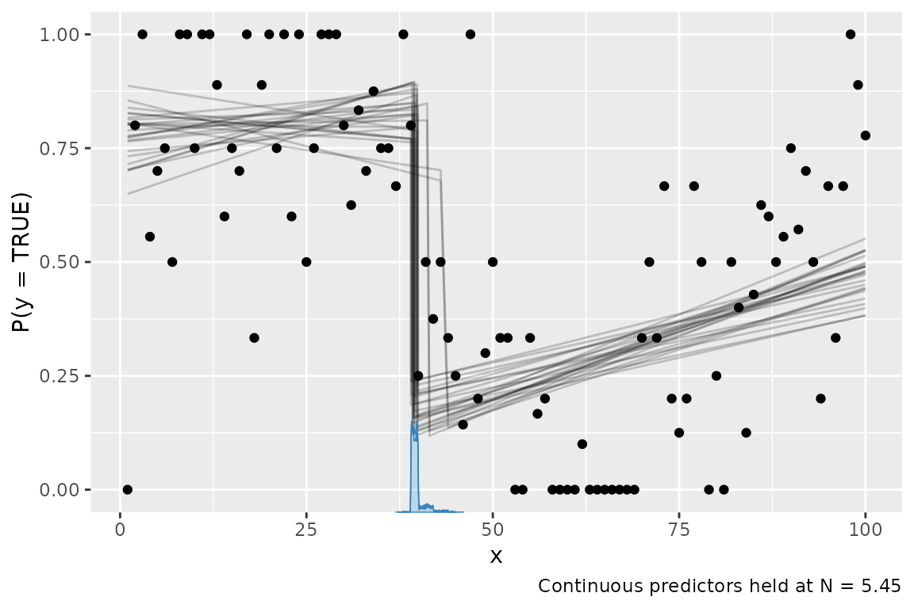

mcp 0.3 added support for more response families and
link functions. For example, you can now do
fit = mcp(model, data = df, family = gaussian("log"))
fit = mcp(model, data = df, family = binomial("identity"))This is an ongoing effort and more will be added. This table shows the current status:

- Green: supported and the default priors are unlikely to change.
- Yellow: supported but the default priors may change.
- White: not currently supported. Raise a GitHub issue if you need it.
- Red: impossible or will not be supported.
See the “GLM” menu above for more details on using GLM with
mcp.
General remarks
Some link functions are default in GLM for good reasons:
they have proven computationally convenient and interpretable. When
using a non-default link function, you risk predicting impossible
values, at which point mcp will error (as it should) -
hopefully with informative error messages. For example a
bernoulli("identity") family with model
prob ~ 1 + x (i.e., a slope directly on the probability of
success) can easily exceed 1 or 0 and there are, of course, no such
thing as probabilities below 0% or above 100%. One way to ameliorate
such problems is by setting informative priors (e.g., via truncation) to
prevent the sampler from visiting illegal combinations of such
values.
In short: think carefully and proceed at your own risk.
An example
library(mcp)
future::plan(future::multisession, workers = 3)
set.seed(42) # Make the script deterministicReviving the example from the article on binomial models in mcp…
model = list(
y | trials(N) ~ 1 + x, # Intercept and slope on P(success)
~ 1 + x # Disjoined slope on P(success)
)we can model it using an identity link function:
data = mcp_example_data("binomial")
fit = mcp(model, data = data, family = binomial(link = "identity"))## Parallel sampling in progress...
##
## Error in update.jags(model, n.iter, ...) : Error in node loglik_[63]
## Invalid parent valuesOops, the sampler visited impossible values! Likely
P(success) < 0% or P(success) > 100%.
Let’s help it along with some more informative priors. For this data and
model, the main problem is that the slope of the second segment has too
great posterior probability of surpasses 100% with the default
mcp priors. So let’s set some more informative priors
render a long (early cp_1) and steep (high
x_2) slope unlikely:
prior = list(
x_2 = "dnorm(0, 0.002)", # Slope is unlikely to be steep
cp_1 = "dnorm(30, 10) T(20, )" # Slope starts not-too-early
)
fit = mcp(model, data = data, family = binomial(link = "identity"), prior = prior)
plot(fit)
Sampling succeeded! This is a bad model of this data. But it illustrates the necessary considerations and steps to ameliorate problems when going beyond default link functions.
Because of the identity-link, the regression coefficients are
interpretable as intercepts and slopes on P(success) in
contrast to the “usual” log-odds fitted when
family = binomial(link = "logit"). For example,
Intercept_1 is inferred probability of success at
x = 0 and likewise for Intercept_2 at
x = cp_1.
summary(fit)## Family: binomial(link = 'identity')
## Iterations: 9000 from 3 chains.
## Segments:
## 1: y | trials(N) ~ 1 + x
## 2: y | trials(N) ~ 1 ~ 1 + x
##
## Population-level parameters:
## name match sim mean lower upper Rhat ess_bulk ess_tail
## cp_1 30.00 4.0e+01 39.0193 42.5232 1 1733 1355
## Intercept_1 1.50 7.8e-01 0.6647 0.8810 1 786 1458
## x_1 <NA> NA 5.8e-04 -0.0042 0.0053 1 751 1284
## Intercept_2 <NA> NA 1.7e-01 0.1003 0.2526 1 1563 2753
## x_2 -0.15 4.9e-03 0.0028 0.0071 1 1523 2791